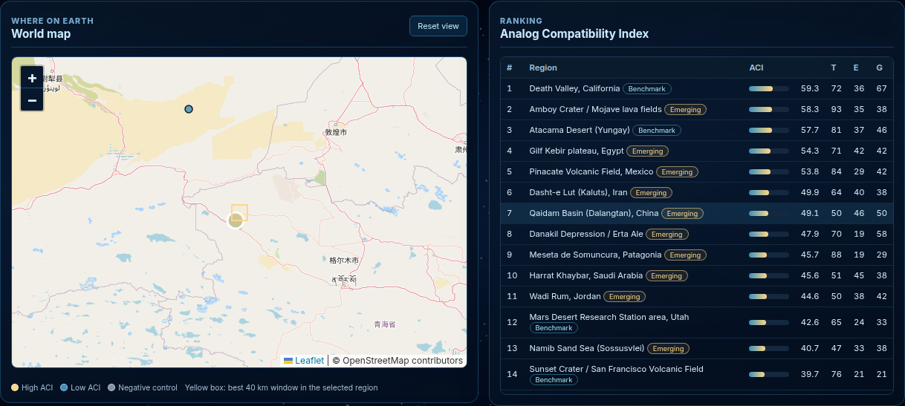
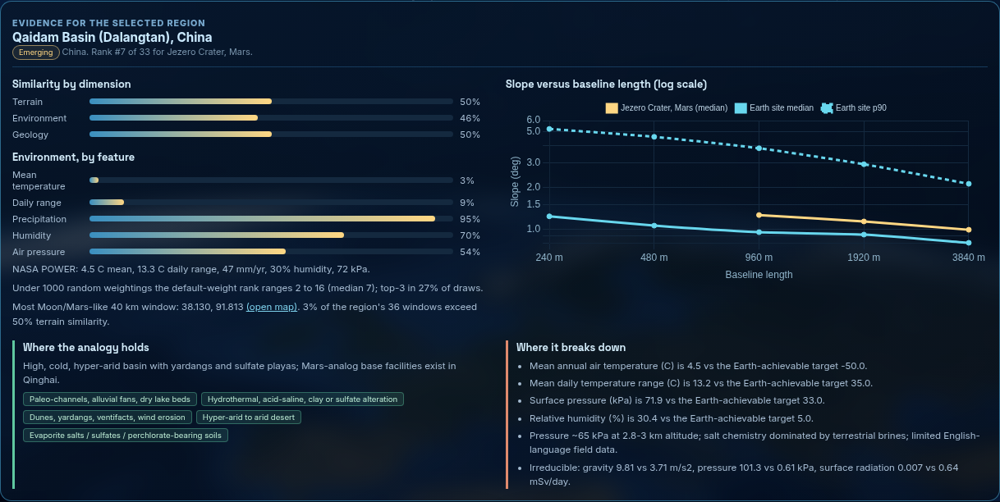

Which places on Earth can rehearse the Moon and Mars, and where does each analogy fail?
Team ASL ASTRONEX · Challenge: Identify Earth Locations that Analog the Permanent Moon Base Locations and Mars
Environmental targets are clipped to what Earth can actually reach, so a high score means “as close as Earth gets”, never equal.

Map shows the best 40 km window (yellow box). Ranking updates instantly when mission priorities change.

Includes slope-versus-scale chart, rank stability over 1000 random weightings, and what no Earth site can reproduce (gravity, pressure, radiation).
| Mars (mean of 6 targets) | ACI |
|---|---|
| Gilf Kebir, Egypt | 51 |
| Dasht-e Lut, Iran | 50 |
| Qaidam Basin, China | 48 |
| Pinacate, Mexico | 45 |
| Atacama (Yungay), Chile | 38 |
5 deliberate negative controls (rainforest, plains, glaciated and monsoon mountains) rank below real candidates:
0.84 Mars 0.66 Moon (AUC; 0.5 = chance)
Lunar polar terrain is rugged, so steep mountains also match it. We report this and treat Moon rankings as hypotheses.
Demo: jfjubayer.github.io/nasa-space-apps-2026-ptae
Code: github.com/JFJubayer/nasa-space-apps-2026-ptae
SI use: an AI assistant drafted the first prototype; GitHub Copilot helped build the real-data pipeline, dashboard, tests and docs. The team chose the data and validity checks.